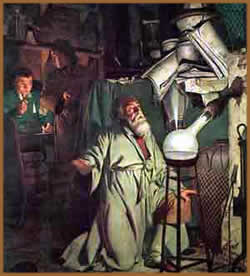

A primeira tarefa do discípulo
consiste na busca da Matéria-Prima. O seu nome tradicional,
Pedra dos Filósofos, nos dá uma idéia
bastante clara desta substância, servindo-nos para começar
a identificá-la. É realmente uma pedra porque
ao ser extraída das minas apresenta as mesmas características
exteriores que o resto dos minerais. Esta Pedra dos Filósofos,
ou sujeito desta arte, não deve ser confundida com
a Pedra Filosofal. Dito sujeito unicamente se converte na
Pedra Filosofal quando, após ser transformada e aperfeiçoada
pela arte, alcança a sua perfeição final
e por conseguinte a propriedade da transformação.
Na literatura alquímica, diz-se que
a Matéria-Prima tem um corpo imperfeito, uma alma constante
e uma cor penetrante, e que contem um mercúrio claro,
transparente e volátil. Esconde no seu coração
o ouro dos filósofos e mercúrio dos sábios.
Recebeu uma multidão de nomes, mas nunca nenhum alquimista
revelou publicamente a sua verdadeira natureza. Uma das maiores
dificuldades que apresenta a alquimia, consiste em identificar
esta matéria. Nos textos alquímicos quase sempre
se omite de forma completamente enganosa.
A Obra é preparada e levada a cabo utilizando
esta única substância que, após ser identificada,
deve ser obtida. Para isso é essencial viajar até
o lugar da mina e obter o sujeito no seu estado bruto. Isto
em si já é uma tarefa árdua, e é
necessário fazer um horóscopo para determinar
qual é o momento mais propício. A Obra deve
ser realizada na primavera do hemisfério Norte, sob
os signos de Áries, Touro ou Gêmeos (a época
mais propícia para começar é a de Áries,
cujo o símbolo celeste corresponde, a linguagem esotérica
ou crítica, ao nome da Matéria-Prima).
Como
preliminar à Obra, o sujeito deve ser purificado, libertado
dos detritos. Isto se realiza utilizando umas técnicas
bem conhecidas pelos metalúrgicos; diz-se, no entanto,
que ditas técnicas requerem muita paciência,
e esforço.
Outra operação consiste na preparação
do fogo secreto, Ignis Innaturalis, também
denominado fogo natural. Os alquimistas definem este
fogo secreto ou Primeiro Agente, como água
seca que não molha as mãos e como o fogo que
arde sem chamas. Este é um tema que deu origem a incontáveis
equívocos e confusões. Pontanus, reconhece
ter equivocado neste ponto mais de duzentas vezes. Realmente,
essa substância é o sal, preparado a partir de
cremor tártaro mediante um processo que requer perícia
e um perfeito conhecimento da química. O processo inclui
a utilização do orvalho primaveril, que se recolhe
de uma forma engenhosa e poética e que a continuação
é destilado.
Quando já estão preparados, a
Matéria-Prima e o Primeiro Agente da Obra, os preliminares
se dão praticamente por finalizados. A Matéria-Prima
é introduzida num morteiro de ágata (ou de alguma
outra substância de grande dureza), é amassada
com o maço, misturado com o fogo secreto e umedecida
com orvalho. A mistura resultante é introduzida a continuação
num recipiente hermeticamente fechado ou Ovo Filosofal,
que se coloca no interior do forno de Atenor, o forno
dos Filósofos.
Este Atenor está desenhado de tal forma
que o ovo pode se manter a uma temperatura constante durante
longos períodos de tempo. O fogo exterior estimula
a ação do fogo interior, razão pela qual
deve ser controlado; em caso contrário, embora o recipiente
não se rompa, todo o trabalho se estragará.
Durante essa etapa inicial, o calor do nascimento dos pintinhos
tem muitos pontos em comum com o processo alquímico.
Dentro do ovo, os dois princípios contidos
na Matéria-Prima - um solar, quente e masculino,
conhecido como enxofre, e o outro lunar,
frio e feminino, conhecido como mercúrio -
atuam um sobre o outro.
Então, estes dois que Avicena chama
a cadela Corascene e o cão armênio - escreve
Nicolas
Flamel - estes dois, digo, ao colocá-los juntos
no recipiente do sepulcro, se mordem de uma forma cruel e
pelo seu forte veneno e terrível ira nunca se soltam
a partir do momento em que se agarram (se o frio não
o impede) até que os dois, como conseqüência
das suas babas venenosas e dos seus ataques mortais, terminam
completamente ensangüentados e acabam matando-se e cozinhando-se
no seu próprio veneno que, depois da sua morte, os
converte em formas naturais e primitivas, para passar depois
assumir uma forma nova, mais nobre e melhor. Desta forma,
à morte - que é uma separação
- lhe segue um longo processo de decadência que dura
até que tudo apodrece e os contrários se dissolvem
no nigredo líquido. Esta escuridão que supera
todas as outras escuridões, este "negrume entre
os negrumes" é o primeiro signo inequívoco
que se está no bom caminho; daí o aforismo dos
alquimistas: "Não há geração
sem corrupção".
A etapa de negrume acaba quando a superfície
do mercúrio voa pelo ar alquímico dentro do
microcosmo do Ovo Filosofal, no ventre do vento,
recebendo as influências celestinas e purificadoras
de cima. Volta a cair, sublimado, sobre a Nova Terra
que finalmente emerge. Ao ir aumentando muito lentamente a
intensidade do fogo exterior, as partes secas vão ganhando
terreno sobre as úmidas, até que o continente
aparecido se coagula e se desseca completamente. Enquanto
isto sucede, aparece um incontável número de
belas cores que correspondem à etapa conhecida como
Causa do Pavão Real.
No final do segundo trabalho, aparece a Brancura,
o albedo. Quando se alcança a Brancura, diz-se que
o sujeito já tem força suficiente para resistir
ao calor do fogo e só tem que dar um passo mais para
que o Rei Vermelho ou Enxofre dos Sábios,
saia do ventre da sua mãe e irmã, Ísis
ou o mercúrio, Rosa Alva, a Rosa Branca.
No terceiro trabalho se recapitulam as operações
do primeiro, que adquirem agora um novo significado. Começa
com pompa de uma boda real. O Rei se reúne no Fogo
do Amor (o sal ou fogo secreto) com a Rainha bendita.
Como Cadmo atravessou a serpente com a sua lança, o
enxofre vermelho fixa o mercúrio branco; e com esta
união se consegue a perfeição final,
nascendo a Pedra Filosofal.
Resumindo brevemente: